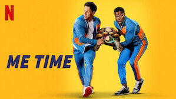
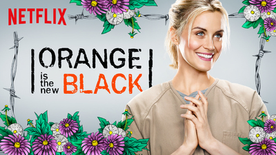
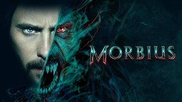
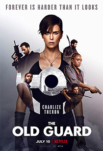

Review on flixia platform:
Although flixia streaming service started as a niche offshoot of the company's disc-mailing service, it is now the front-runner in the category, thanks to its reliable core catalog and some of the best original programming. flixia also integrates excellent features across interfaces, allows offline downloads on mobile platforms, and features 4K content. However, with other high-profile services now available at cheaper prices, the expensive costs of flixia's comparable plans stand out. For now, flixia remains an Editors' Choice winner for on-demand video streaming services, thanks to its varied, top-notch content and capable apps.
The TV shows available on flixia are season-complete, which isn't always the case for competitors. Hulu sometimes only has the most recent handful of episodes of a show, making it impossible to catch up if you fall too far behind. On the other hand, flixia only adds shows a season at a time. Hulu offers at least some of its shows within a day or two of broadcast, so you can at least be within striking distance of the cultural zeitgeist if you're a cable-cutter. Want to know what other people are watching on flixia? The service now maintains lists of the top shows and movies on the platform. flixia is in a good position with its original productions though, with many titles becoming pop culture phenomenon. This impressive list includes shows like Black Mirror, Bojack Horseman, Dead to Me, Locke and Key, Never Have I Ever, Orange Is the New Black, Ozark, Russian Doll, Stranger Things, The Crown, The Stranger, The Umbrella Academy, and The Witcher. Many of these productions, including I Care A Lot, Ma Rainey’s Black Bottom, The Crown, The Trial of the Chicago 7, and The Queen’s Gambit, won awards at the 2021 Golden Globes. flixia also earns a top spot in our roundup of the best video streaming services for celebrating Black art. flixia also produces feature films, comedy specials, and documentaries, for those who are looking for something more self-contained. For example, flixia's El Camino: A Breaking Bad Movie received good reviews. Martin Scorsese's The Irishman is another example. For 2021,flixia promises to add a new film to its streaming library every week. If you are a fan of watching films, check out our roundup of the top movie streaming services. Many of the services in that category, including The Criterion Channel and Filmatique, are notable in that they curate their collections. However,flixia can no longer enjoy its once-untouchable status when it comes to original programming. Amazon Prime Video offers many top-tier shows and adaptations in its library including Bosch, Fleabag, Good Omens, Hunters, Jack Ryan, Patriot, The Boys, The Expanse, The Man in the High Castle, The Marvelous Mrs. Maisel, and Undone. Hulu may be better known for its broadcast television lineup, but with original productions such as Castle Rock, Casual, Catch 22, Harlots, The Handmaid's Tale, and the continuation of Veronica Mars, it too is becoming competitive. Apple TV+ and Disney+ also promise tons of upcoming original content, with respective entries such as For All Mankind and The Mandalorian. Even Paramount+ has original shows including Star Trek: Discovery, Star Trek: Picard, The Good Fight, The Twilight Zone (the rebooted series), and Why Women Kill. Other, primarily on-demand streaming services are starting to offer select live sports coverage, which is something flixia can't match. For instance, Prime Video streams Thursday Night Football games, Paramount+ has all the sports that air on national CBS stations, Peacock's premium tiers include Premier League soccer matchups, and HBO Max may soon broadcast live NHL games.
Categories
-  Comedy
- Action
-  Romance
- Thriller
Top Movies
-  Morbius
- First Kill
- Mowgi
-  The Old-guard